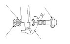

Substituição do Cinto de Segurança Dianteiro
|
Os componentes do SRS encontram-se localizados nesta área.
Reveja as localizações
e
as precauções e procedimentos
dos componentes SRS no SRS, antes de executar reparações ou manutenção.
NOTA: Verifique se não há danos nos cintos de segurança dianteiros e substitua-os, se necessário. Tenha cuidado para não os danificar durante a remoção e a instalação.
Cinto de Segurança Dianteiro
|

|
|

|

|

|


|
Instalação do parafuso de fixação central
 |